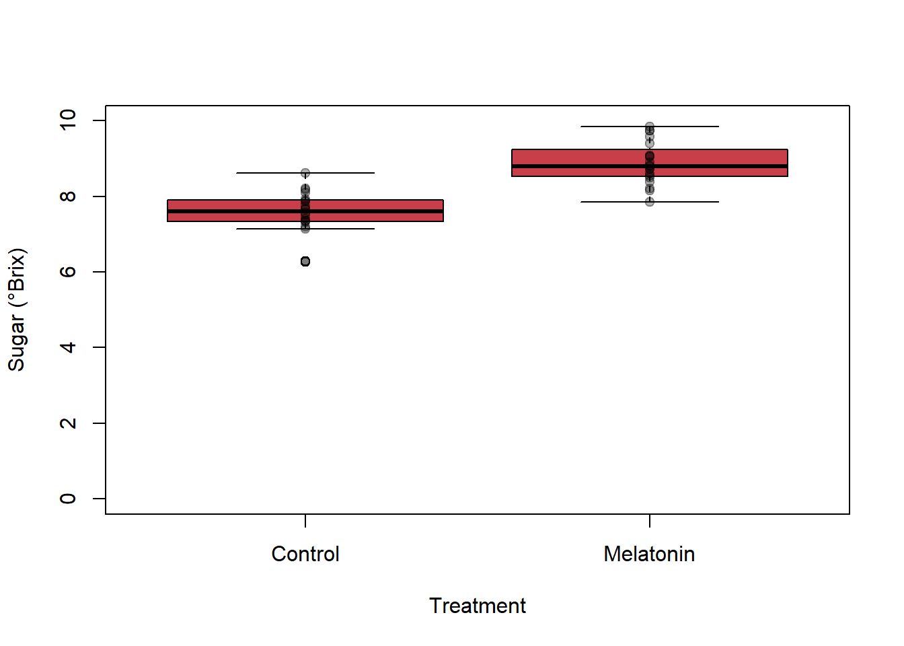

Understand hypothesis testing as a decision-making framework, including the role of the null hypothesis (H₀), the notion of “innocent until proven guilty”, and how scepticism and chance underpin scientific inference.
Recognise and reason about uncertainty and errors, by identifying Type I and Type II errors
Apply hypothesis testing to a realistic biological problem, using a dataset from an agricultural experiment to assess whether a biostimulant (melatonin) affects strawberry fruit quality.
Develop statistical intuition through data exploration and visualisation, learning how summaries, distributions, overlap between groups, and assumptions about normality connect to p-values, and experimental design choices.
1. H0 and the notion of innocence
In science, we start from a position of scepticism. We do not automatically accept a claim just because it sounds reasonable or interesting. Instead, we demand sufficient evidence before we are willing to believe that something is happening.
A useful question to ask is always:
“Could this result have happened just by chance?”
You have already encountered this idea in previous sessions. For example:
Last week, we asked whether the diet of small catfish differs from that of large catfish.
We also wondered whether the probability of finding a fish that has eaten plants changes when we sample 10 fish versus the entire lake population.
The null hypothesis, usually written as H₀, (usually) represents this idea of chance.
It states that nothing special is happening — no effect, no difference, no treatment impact.
H₀ = what we would expect if the observed pattern were due to random variation alone
In hypothesis testing, H₀ is our default assumption.
1.1. Innocent until proven guilty
Hypotheses are hierarchical in much the same way as most modern legal systems.
In court: A person is assumed innocent until sufficient evidence proves otherwise.
In statistics: A result is assumed to be due to chance (H₀) until sufficient evidence suggests otherwise.
We do not “prove” H₀ wrong with certainty — we only decide whether the data provide enough evidence to reject it.
1.2. How do we decide what is “rare”?
Hypothesis testing is about asking:
“If H₀ were true, how likely is it that we would observe data like this — or more extreme?”
This probability is what we later call the p-value.
QUESTION 1. Reflective thinking
Describe your mental process to accept or reject something someone said such as “All frogs are green”. Consider if aspects such as person saying it, or the moment of their lives, background and expertise, whether you have seen examples… What will determine your credibility to the statement? Will you initially believe it? Why? How much evidence would you need before accepting it as true?
🚩ANSWER:
Hint. No good/bad answer. The goal is to reflect on scepticism and evidence
QUESTION 2. Errors in decision-making
When we test a hypothesis, we can make mistakes.
A helpful analogy is a fire alarm:
Type I error: An alarm without a fire
(We reject H₀ when it is actually true.)
Type II error: A fire without an alarm
(We fail to reject H₀ when it is actually false.)
What happens to Type I and Type II errors if you remove the alarm batteries?
🚩ANSWER:
QUESTION 3. Are Type I and Type II errors equally important?
Deep thoughts…. Randomness has no bias - humans do. Hypothesis testing is our attempt to keep our bias under control. Every decision hides a strategy. Some of us assume the worst. Some of us assume the best. Both reduce one kind of mistake and increase another. There is also a strange option: randomness.
Not clever. Not wise. But fair. It has no memory, no fear, and no favourite mistake. Sometimes, that’s enough to beat our biased instincts. Is it? Which is your prefered error type?
2. Biostimulants
Biostimulants are products (often extracts or microbial inoculants) that stimulate natural processes in plants to improve nutrient use efficiency, stress tolerance, yield and/or crop quality — not by supplying macronutrients directly but by changing plant physiology or microbial interactions. They are increasingly used because they can add crop value (quality) rather than just volume, and many commercial products are now on the market.
Biofortification means increasing the nutrient density or the nutritional/health value of crops during production (breeding, biotechnology or agronomic practices) to combat “hidden hunger” and support food security. It is a complementary approach to post-harvest fortification and is widely supported by international bodies.
Are you familiar with Melatonin? (A molecule famous in animals for circadian regulation, i.e. sleep better). In plants, when applied exogenously, has been reported to influence growth, stress tolerance, fruit development and some quality traits (including sugar accumulation and antioxidant content) in several crops. The mechanism is still active research, but reviews show growing evidence for beneficial effects and for practical applications in horticulture.
This is a professional problem: many agri-tech companies develop biostimulants (seaweed extracts, humic acids, microbial inoculants). Example commercial brands include seaweed-based products such as Kelpak (and large suppliers like Acadian Plant Health), which illustrate how industry formulates natural extracts as biostimulants.
Treatment: foliar spray of 10uM melatonin solution vs. water (control).
Application: Weekly foliar spray starting at first flowering, continuing until fruit set. Final sprays 7–10 days before harvest.
Design: Randomized allocation of plants to treatments (n = 20 plants per group). Harvest when fruit are fully ripe; from each plant collect 2 ripe berries, measure berry mass (g) and soluble solids (°Brix) using a refractometer (proxy for sugar content). We assign one numeric PlantID.
Key outcome variables:Sugar (°Brix), Size (berry mass in g), Treatment (Control / Melatonin), PlantID.
# Do not worry about this code, it just creates the dataset. Don't forget to run it.set.seed(2026)n_per_group <-20# Create plant-level datasetcontrol_sugar_mean <-7.8mel_sugar_mean <-8.7control_size_mean <-8.6mel_size_mean <-7.9# realistic SDssugar_sd <-0.6size_sd <-0.9straw_mel <-data.frame( PlantID =sprintf("P%02d", 1:(2*n_per_group)), Treatment =rep(c("Control","Melatonin"), each = n_per_group))# simulate outcomesstraw_mel$Sugar <-rnorm(2*n_per_group, mean =ifelse(straw_mel$Treatment =="Melatonin", mel_sugar_mean, control_sugar_mean), sd = sugar_sd)straw_mel$Size_g <-rnorm(2*n_per_group, mean =ifelse(straw_mel$Treatment =="Melatonin", mel_size_mean, control_size_mean), sd = size_sd)# round/format nicelystraw_mel$Sugar <-round(straw_mel$Sugar, 2)straw_mel$Size_g <-round(straw_mel$Size_g, 2)head(straw_mel)
PlantID Treatment Sugar Size_g
1 P01 Control 8.11 7.56
2 P02 Control 7.15 9.30
3 P03 Control 7.88 7.52
4 P04 Control 7.75 8.88
5 P05 Control 7.40 7.85
6 P06 Control 6.29 9.88
QUESTION 4. Write down the H0 and H1 for this experiment.
🚩ANSWER:
QUESTION 5. Decide your level of confidence (alpha).
Which level of confidence would you accept? Would you be happy with a balanced type I and type II error?
🚩ANSWER:
QUESTION 6. Draw conclusions from visualising the data
Just before starting any test or calculation always take a look at the data. What could you anticipate?
A couple of weeks ago we learned how to describe continuous data (the red kite longevity). Based on those metrics (e.g. mean, sd, etc.), would you guess that the treatment works?
# Run this chunk to obtain the mean and sd per treatment# Mean sugar by treatment tapply(straw_mel$Sugar, straw_mel$Treatment, mean)
Control Melatonin
7.5640 8.8865
# SD of sugar by treatment tapply(straw_mel$Sugar, straw_mel$Treatment, sd)
Control Melatonin
0.5776395 0.5578084
Test yourself: how would you explain to your supervisor the obtained results? Are they promising?
🚩ANSWER:
Perhaps it is easier if we create a visualisation?
boxplot(Sugar ~ Treatment, data = straw_mel, ylab ="Sugar (°Brix)", xlab ="Treatment", col ="#c83f49", ylim=c(0,10))stripchart(Sugar ~ Treatment, data = straw_mel, vertical =TRUE, add =TRUE, pch =19, col =rgb(0,0,0,0.3))

🚩ANSWER:
QUESTION 7. And now what?
And now… what? How can we confirm that the slightly higher sugar values from the Melatonin treatment are not just higher by chance? Should we repeat the experiment a milion times? Is there any other way to determine the likelihood of plants under the control treatment have such high values that we observe for the Melatonin-treated plants?
🚩ANSWER:
QUESTION 8. Let’s do it (don’t worry about the coming code)!
Each curve is what we think the distribution of sugar values looks like for each treatment, based on our sample. It seems that for the control, values around 7.5 are common, and the range of values goes from 6.5 to 8.5. Let’s plot that as an histogram:
# extract control datacontrol_sugar <- straw_mel$Sugar[straw_mel$Treatment =="Control"]# histogram scaled to densityhist(control_sugar,breaks ="Sturges",freq =FALSE, # density scalexlab ="Sugar content (°Brix)",ylab ="Density",main ="Sugar content in Control plants",border ="white", xlim=c(0,12))# add estimated normal distributioncurve(dnorm(x,mean =mean(control_sugar),sd =sd(control_sugar)),add =TRUE,lwd =2,lty =2)
What does the area in purple represent? (this is a veeeeeery difficult question, I imagine you might want to check the hints below)
🚩ANSWER:
Hints:
The more the two normal curves overlap, the harder it is to tell treatments apart.
The blue curve represents the probable values that you are likely to obtain under the control treatment.
Assuming Melatonin does not change the sugar levels, would you say the observed values are possible? Are some of them? most of them?
Have you encountered yet the concept of the p-value? It is essentially the probability of our H0 to be true. A small value means that observing the treatment values where they are would be very difficult by chance.
QUESTION 10. Final reflections
Explain to your company supervisor why this result worth investing more money and trying to generate a commercial product.
🚩ANSWER:
Are we sure the data is normally distributed? What could we do if it is not?
🚩ANSWER:
Do you think we could save costs and grow less plants for further experiments? Try it! Just modify n_per_group = 20 to n_per_group = 5 for example and re-run everything, check if we would reach a similar conclusion.
🚩ANSWER:
I added another variable to the created dataset, in addition to the Sugar levels, you also have the Size_g of the berries. Change the code to take a look at this variable instead of the Sugar levels. Does Melatonin have a negative impact? Would that change how you tell your supervisor about this being an amazing investment?
🚩ANSWER:
How does what we have seen today connects with one-sided vs two-sided tests?